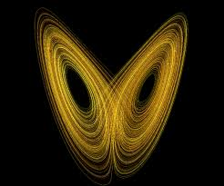

Termodiámica
Breakpoints are based on min-width media queries, meaning they affect that breakpoint and all those above it (e.g., .col-sm-4 applies to sm, md, lg, xl, and xxl). This means you can control container and column sizing and behavior by each breakpoint.